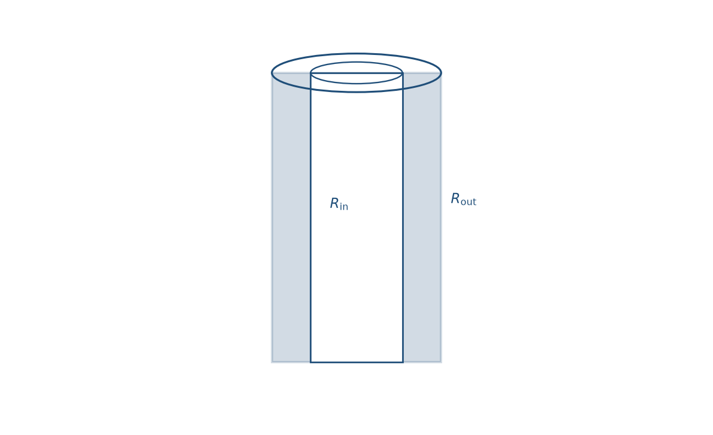
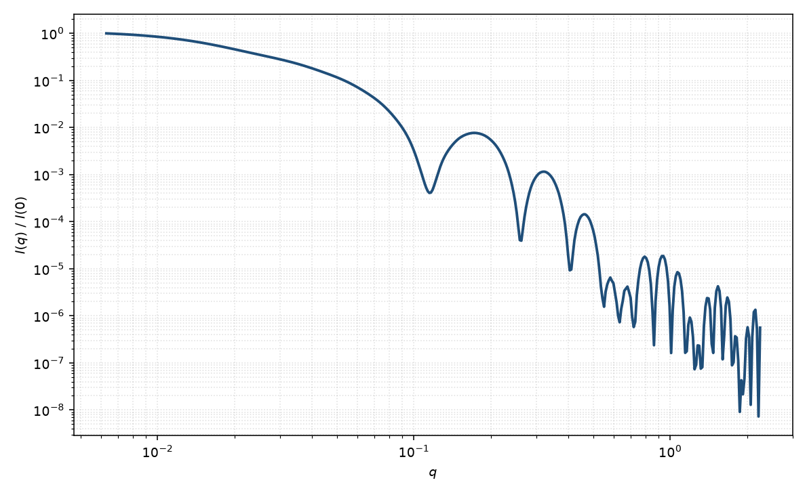

空心圆柱
hollow cylinder
适用场景
空心圆柱（管）描述内外半径满足 $R_{\mathrm{in}}\lt R_{\mathrm{out}}$、管壁衬度相对溶剂均匀的有限长管。适用于中空纳米管、溶剂填充的管状胶束、以及核衬度被匹配掉的核壳圆柱极限。
相对实心棒，中间 $q$ 仍可出现 $q^{-1}$（细长管）或更接近壳的调制；截面振荡由内外半径共同决定，壁很薄时高 $q$ 更接近空心壳而非实心 Porod。
若管壁本身还有径向分层，应回到核壳圆柱或多层圆柱，而不是把壁厚当成单一 $\Delta\rho$。
物理图像
空心管等价于核壳圆柱在 $\rho_c=\rho_{\mathrm{solv}}$ 时的特例：振幅是外圆柱减去内圆柱。取向平均与均匀圆柱相同。壁厚 $t=R_{\mathrm{out}}-R_{\mathrm{in}}$ 控制中等 $q$ 的干涉条纹间距，约 $\pi/t$ 量级。
管腔若并非溶剂而是另一种均匀介质，只需把内衬度从 $\rho_{\mathrm{solv}}$ 改成该介质的 $\rho$，形式上仍是核壳圆柱。
示意图


核心公式
出发点
稀释、取向无规的均匀管壁，相干散射振幅是衬度对平面波相位的体积分
$$F(\mathbf{q})=\int_V \Delta\rho(\mathbf{r})\,\mathrm{e}^{i\mathbf{q}\cdot\mathbf{r}}\,\mathrm{d}^3r.$$空心圆柱在 $R_{\mathrm{in}}\le r_\perp\le R_{\mathrm{out}}$、$|z|\le L/2$ 内 $\Delta\rho=\rho-\rho_{\mathrm{solv}}$ 为常数，管腔与溶剂相同。积分等于外圆柱减去内圆柱，轴向与径向仍然分离。
推导
均匀圆柱振幅（体积因子已含在 $F$ 内）
$$F(q,R,L,\alpha)=(\pi R^2 L)\,\frac{2J_1(qR\sin\alpha)}{qR\sin\alpha}\cdot\frac{\sin(qL\cos\alpha/2)}{qL\cos\alpha/2}.$$空心管因此是核壳圆柱在 $\rho_c=\rho_{\mathrm{solv}}$ 时的特例：
$$A(q,\alpha)=(\rho-\rho_{\mathrm{solv}})\bigl[F(q,R_{\mathrm{out}},L,\alpha)-F(q,R_{\mathrm{in}},L,\alpha)\bigr].$$$q\to 0$ 时 $A(0)=\Delta\rho\cdot\pi(R_{\mathrm{out}}^2-R_{\mathrm{in}}^2)L$。粉末平均
$$P(q)=\frac{\displaystyle\int_0^{\pi/2}|A(q,\alpha)|^2\sin\alpha\,\mathrm{d}\alpha}{\displaystyle\int_0^{\pi/2}|A(0,\alpha)|^2\sin\alpha\,\mathrm{d}\alpha}.$$薄壁 $t=R_{\mathrm{out}}-R_{\mathrm{in}}\ll R_{\mathrm{out}}$ 时，径向因子接近平均半径处的环：$J_0(q\bar R\sin\alpha)$ 类振荡，间距由 $\bar R$ 而非实心柱的 $J_1$ 零点单独决定。
低 $q$ 与渐近
Taylor 展开后与 Guinier 比较，空心管的回转半径比同外径实心柱更大：径向贡献从 $R_{\mathrm{out}}^2/2$ 换成 $(R_{\mathrm{out}}^2+R_{\mathrm{in}}^2)/2$，轴向仍是 $L^2/12$，即
$$R_g^2=\frac{R_{\mathrm{out}}^2+R_{\mathrm{in}}^2}{2}+\frac{L^2}{12}.$$细长管中间区仍 $\sim q^{-1}$。壁厚干涉在 $q\sim\pi/t$ 量级出现调制。大 $q$ 时内外两个尖锐界面给出 Porod $q^{-4}$；极薄壁时截面更像空心壳，振荡包络可接近 $q^{-2}$ 再进入界面尾。
参数表
| 参数 | 符号 | 含义 | 单位 | 典型范围 |
|---|---|---|---|---|
| 内半径 | $R_{\mathrm{in}}$ | 管腔内半径 | Å 或 nm | 5–400 Å |
| 外半径 | $R_{\mathrm{out}}$ | 管壁外半径 | Å 或 nm | 大于内半径一个壁厚 |
| 长度 | $L$ | 管的轴向长度 | Å 或 nm | 20–5000 Å |
| 壁 SLD | $\rho$ | 管壁散射长度密度 | Å$^{-2}$ | 由组成计算 |
| 取向角 | $\theta,\phi$ | 轴相对光束（二维） | 度 | 由取向分布约束 |
| 标度 / 本底 | $\mathrm{scale}$, $B$ | 前置因子与本底 | 与强度单位一致 | 实验相关 |
拟合注意
内外半径与壁衬度三联简并：薄壁高衬度与厚壁低衬度可给出相近 $I(q)$。优先用组成固定 $\rho$，或用对比变分。
多分散：外半径分布抹平截面极小；长度分布改 $q^{-1}$ 区。内半径多分散与壁厚多分散在数据上几乎不可分，通常只放一个径向宽度。
取向与磁性同均匀圆柱：二维用 $\theta,\phi$；磁管壁的磁 SLD 与核 SLD 分开。管腔含磁性流体时须单独建模，不能只用壁的 $\Delta\rho$。
相近模型
参考文献
- Livsey, I. Neutron scattering from concentric cylinders. Intraparticle interference function and radius of gyration. J. Chem. Soc., Faraday Trans. 2 1987, 83, 1445–1452. DOI: 10.1039/F29878301445
- Guinier, A.; Fournet, G. Small-Angle Scattering of X-rays. Wiley: New York, 1955.